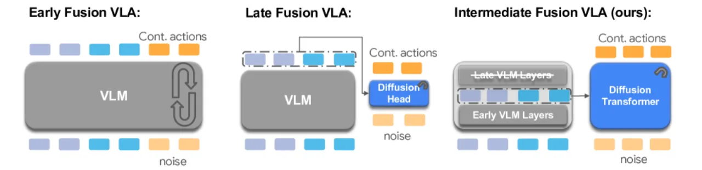
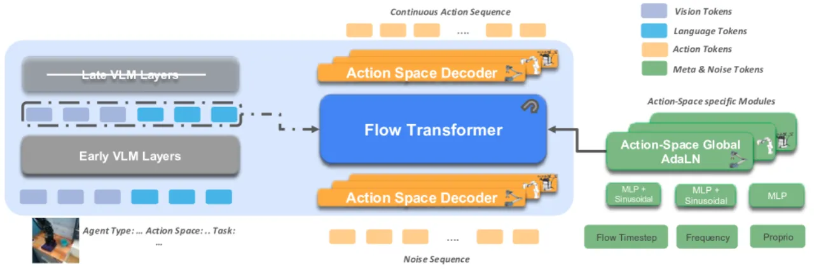
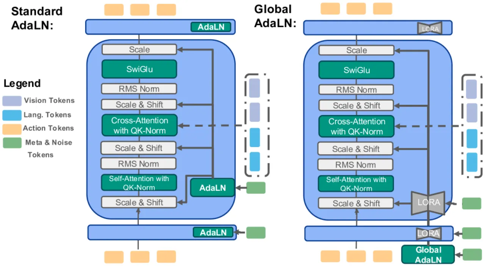
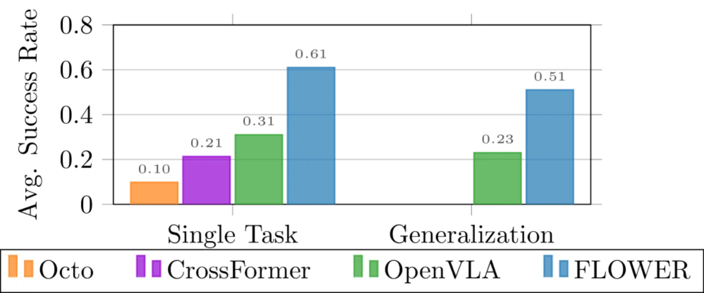
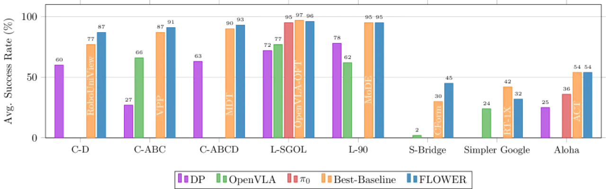

FLOWER 通过两项核心创新——中间模态融合（Intermediate-Modality Fusion）和Global-AdaLN 条件化——构建了一个仅需 200 H100 GPU 小时即可预训练的 950M 参数 VLA 模型，在 190 项仿真与真实世界任务中达到最新最优性能，同时大幅降低显存占用与推理延迟。
大型视觉-语言-动作（VLA）模型在通用机器人策略学习中潜力巨大，但现有方法面临两大核心瓶颈：训练成本极高（往往需要数千 GPU 小时）以及推理效率低下（高显存占用、低频率输出），严重限制了其在真实场景与低资源环境中的落地。
"We present FLOWER, an efficient VLA flow policy capable of pretraining a 950M parameter model in only 200 H100 GPU hours, while achieving competitive performance across 190 tasks spanning simulation and real-world benchmarks."

现有方法的痛点主要体现在两个层面：
FLOWER 通过截断预训练 VLM 的中间层特征（而非使用完整输出），在减少 20–35% 参数量的同时保留关键的跨模态语义信息，从而实现了训练效率与策略性能的双赢。
FLOWER 的整体框架由三个模块组成：视觉-语言编码器（VLM）提供多模态上下文表示；Flow Transformer 通过 cross-attention 接收 VLM 的中间层特征并执行 flow matching 动作解码；Global-AdaLN 以高效的参数共享方式为每层提供动作空间特定的调制信号。

传统 VLA 模型通常使用 VLM 的最终层输出（晚期融合）或将图像 token 直接插入 LLM 输入（早期融合）。FLOWER 则采用"中间截断"策略：对于编码器-解码器结构（如 Florence-2），移除整个解码器（减少 50% 参数）；对于仅解码器结构（如 LLaMA），丢弃最后 30% 的层（减少 20–35% 参数）。截断后的中间层特征通过 cross-attention 传入 Flow Transformer。
"The intermediate representation prunes between 30% and 50% of pretrained VLM layers, yielding a 20–35% parameter reduction while preserving rich cross-modal semantics."
消融实验证明，中间融合相比早期融合提升 61 个百分点（LIBERO-Long：93.4% vs 33.4%），相比晚期融合提升 21 个百分点，优势显著。

标准的 AdaLN-Zero 为 Diffusion Transformer 的每一层分配独立的调制参数，随层数增多参数量线性增长。Global-AdaLN 则将调制权重全局共享：
FLOWER 的动作解码头基于 flow matching 框架（而非 DDPM 扩散过程），通过学习从噪声分布到动作分布的连续 ODE 流实现动作生成。Flow Transformer 接收带噪声的动作序列作为输入，以 VLM 中间层嵌入为条件，经去噪后输出机器人动作序列。该框架支持灵活的采样步数，在推理时可以更少步数获得高质量动作，从而实现 311.04 Hz 的高频推理（RTX 4090）。
FLOWER 在 10 个基准上进行了系统评测，涵盖仿真（CALVIN、LIBERO、SIMPLER、Aloha）和真实世界（厨房操作）任务，共 190 项任务。对比基线包括 OpenVLA、π0、Octo、Seer、VPP 等代表性 VLA 模型。
| 方法 | 平均序列长度（满分5.0） |
|---|---|
| OpenVLA | 3.27 |
| Seer | 4.28 |
| VPP | 4.29 |
| π0 | 4.01±0.04 |
| FLOWER（本文） | 4.53±0.04 |
| 任务 | Octo | OpenVLA | π0 | FLOWER |
|---|---|---|---|---|
| Spatial | 78.9±1.0% | 84.7±0.9% | 96.8% | 97.5±0.8% |
| Object | 85.7±0.9% | 88.4±0.8% | 98.8% | 99.1±0.4% |
| Goal | 84.6±0.9% | 79.2±1.0% | 95.8% | 96.1±0.6% |
| Long | 51.1±1.3% | 53.7±1.3% | 85.2% | 94.9±1.2% |

| 场景 | OpenVLA | FLOWER |
|---|---|---|
| 厨房平均（5 任务） | 31% | 61% |
| 新物体泛化 | 10% | 33.3% |
| 闪光灯光照 | 25% | 50% |
| 背景干扰物 | 41.7% | 69.5% |
| 新任务组合 | 16.7% | 51.1% |
| 泛化场景平均 | 23.4% | 51.0% |

| 模型 | 吞吐量 (Hz) | 延迟 (s) | 显存 (MB) |
|---|---|---|---|
| OpenVLA | 6.09 | 0.164 | 14,574 |
| Diffusion Policy | 130.67 | 0.341 | 517 |
| π0 | 288.11 | 0.104 | 6,692 |
| FLOWER | 311.04 | 0.052 | 1,848 |
FLOWER 推理速度比 π0 快 8%，比 OpenVLA 快 5,007%；显存仅为 π0 的 27.6%，OpenVLA 的 12.7%。
关键消融结果（CALVIN ABC 与 LIBERO-Long 双任务）：
"It relies on an iterative sampling procedure, which is inherently slower than a single forward pass from deterministic policies."——基于 flow matching 的多步去噪推理，在步数较多时仍慢于单步确定性策略（如 ACT）。
"We have validated FLOWER primarily on three manipulation action spaces; its ability to generalize to other embodiments, such as mobile navigation or humanoid locomotion, remains unexplored and is an important direction for future work."——尚未在移动导航或人形机器人场景下验证。
"Pretraining performance for zero-shot deployment on the SIMPLER Google Robot benchmark indicates that further improvements are needed. We hypothesize that the generalization tested in SIMPLER benefits from larger models."——在 Google Robot 设置下（31.9%）低于 RT-1-X（42.4%），作者推测更大模型有助于改善。
"Although FLOWER is considerably smaller than most state-of-the-art VLA models, its ≈1 B-parameter size may still present deployment challenges in low-resource or real-time settings."
"Eight out of our ten used benchmarks are conducted in simulation, limiting the extent to which our results can be taken as evidence of real-world generalization."——真实世界结果相对有限，泛化结论需谨慎外推。